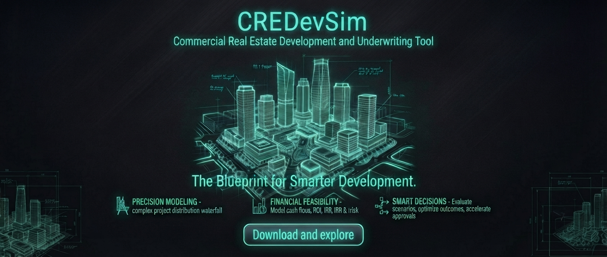
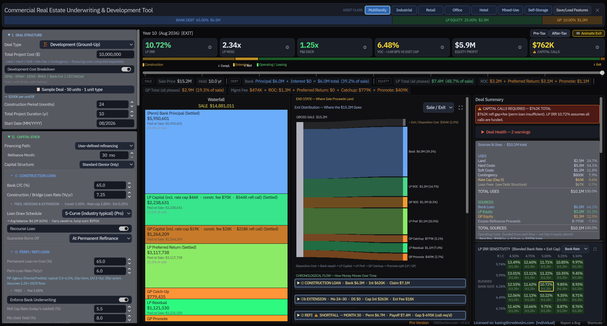
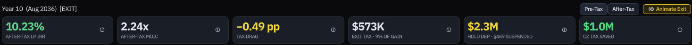
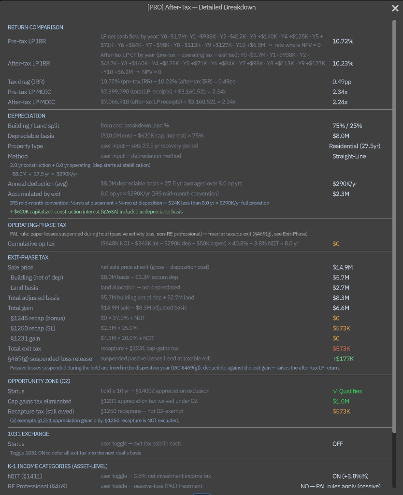
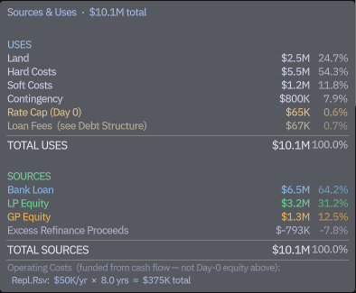
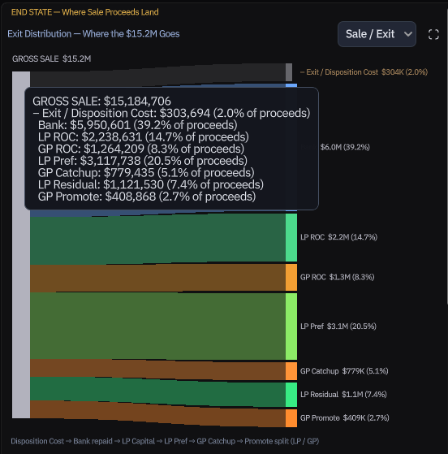
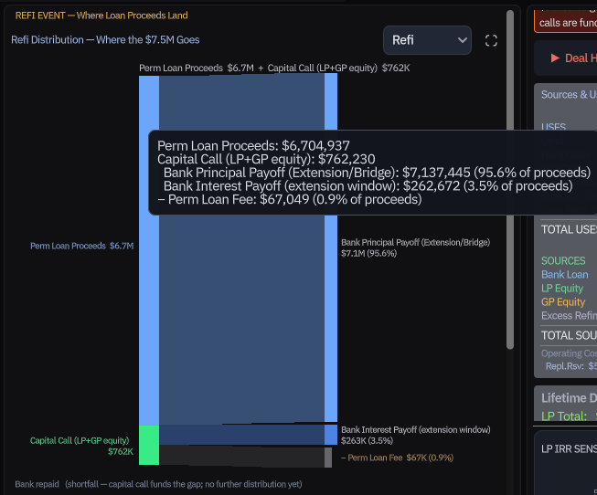
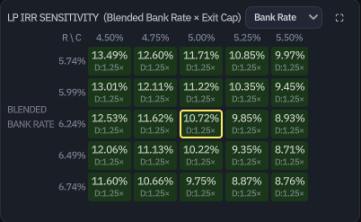

The only CRE deal model
built by a Big 4 auditor.
The one that actually gets your LPs' after-tax return right: depreciation recapture, 1031, and Opportunity Zone. Give your investment committee a number that traces back to its inputs, computed the way an auditor would check it. Built for developers, syndicators, and boutique acquisition shops raising institutional and HNW equity.
Your Data Never Leaves Your Machine
The numbers you enter, even I can never see.
CREDevSim runs entirely on your own computer. Your deal inputs, saved files, and every output stay on your local hard drive, never uploaded, never synced, never transmitted. The only thing the app sends over the network is a lightweight license-check token. Your deal data never leaves.
No cloud to breach
There is no server receiving your numbers, no database holding your deal flow, nothing to leak, subpoena, or hack. The only place your confidential inputs live is your own hard drive.
Even the creator cannot see it
I built CREDevSim, and I have no technical path to your inputs, no copy on any server I control, no tracking of your deal contents. It is not a policy promise; there is simply no pipe for your data to travel down.
Nothing to vet
No vendor security questionnaire, no SOC 2 review, no data-processing agreement to negotiate, because no third party ever touches your data. Institutional LPs protective of proprietary deal flow have nothing to object to.
The Moat, Built by an Auditor
The after-tax number your LPs actually spend.
Most rival models stop at a pre-tax IRR. Your LPs do not invest pre-tax dollars. CREDevSim computes the LP's return after depreciation, recapture, and exit tax, the way a fund auditor builds it, and the way an investment committee tests it.
After-Tax LP IRR & MOIC
A true after-tax LP cash-flow series, not a pre-tax proxy. Depreciation shield during the hold, full tax drag at exit, NIIT (3.8%) applied by real-estate-professional status.
§1245 / §1250 Recapture, Split Correctly
Short-life recapture at ordinary rate + NIIT; straight-line real-property recapture at the 25% capped rate with no surcharge. The split most spreadsheets quietly get wrong.
1031 Exchange + Boot
Defers recapture and capital gain at exit, taxes the boot proportionally, and shows the deferred tax as buying power carried into the next deal's basis.
Opportunity Zone
A 10-year hold excludes appreciation gain from federal capital-gains tax. Recapture stays taxable, modeled to the IRS rule, not glossed over.
K-1 Income Breakdown
Ordinary income (Year 1 vs. steady-state), plus §1245 and §1250 gain at exit, the income categories your LPs' accountants ask for, computed at the asset level.
Passive-Loss Rules (§469)
Suspends a non-professional LP's paper losses during the hold and releases them at a fully-taxable exit, correctly held back on a 1031. A senior-level detail, automated.
Documented Approximations, Read Before You Trust It
Amateurs hide their assumptions. Here are ours, in plain sight, each a deliberate, sponsor-grade simplification with a known ceiling:
- ✕A project management tool, no Gantt charts, no task boards, no milestone tracking
- ✕Enterprise software, no implementation team, no training program, no onboarding calls
- ✕A replacement for your deep-dive Excel model, this is the fast pre-screen that runs before it, not instead of it
- ✕Argus, no rent roll, no lease abstraction, no $5,000/yr contract
- ✕A cloud platform where your confidential deal data lives on someone else's server
- ✓One screen. Type your numbers. The full capital stack solves itself, instantly.
- ✓Open it, enter a deal, done, zero setup, zero learning curve, zero configuration
- ✓Every output traces to an input you typed, no hidden logic, no black-box surprises
- ✓Purpose-built for LP/GP waterfall mechanics, capital calls, and promote structures
- ✓100% local. Nothing leaves your machine. Your deal data is yours.
Structure the deal
Enter cost, debt, equity, and operating assumptions in one place.
Stress the economics
Adjust timing, rates, and exit assumptions while the waterfall recalculates.
Export the narrative
Move from analysis to investor-ready outputs when you are ready.
Filter Ten Deals Before You Build One Spreadsheet
Before you know whether a deal even clears the hurdle, you are wiring tabs, linking cells, and rebuilding the waterfall from last deal's template.
Type cost, debt, equity, and exit. The full capital stack, waterfall, and returns solve instantly, a go / no-go read in minutes, not an afternoon.
Every new opportunity means another workbook, another save-as, another set of assumptions to keep straight.
Run deal after deal on the same engine. Kill the marginal ones early and spend your deep-underwriting hours only on the survivors.
Construction draws get built cell-by-cell, the S-curve timing hand-plotted and easy to misalign with the actual budget.
Bridge-to-perm draws follow a modeled S-curve automatically, tied to your construction timeline and interest carry.
Promote tiers, catch-up, and pref accrual get hand-built in a side tab for every new deal, and drift from the actual LP/GP agreement.
Preferred return, GP catch-up, and promote tiers are structured the way a fund auditor would build and test them, ready on every deal.
Core Capabilities
One Engine, Every Deal Type
Ground-Up Development, Major Renovation, Distressed Value-Add, Stabilized Acquisition, the engine applies the correct institutional logic for each structure automatically. No templates to swap, no sheets to reconfigure.
Real-Time Visual Dashboard
Drag the timeline, adjust a rate, toggle leverage, every waterfall block, heatmap cell, and Sankey diagram updates instantly as live financial telemetry. See the deal break before it does, without re-running a macro.
Deterministic, Logic-Locked Engine
The same inputs always produce the same outputs, with no Monte Carlo variance sitting between your assumptions and the number an LP sees. The engine enforces hard-coded underwriting standards and makes assumptions and validation flags visible: no circular references, no cross-sheet drift, no formula overrides that bypass the debt constraints.
What is Under the Hood

Institutional-Grade Modeling.
Without the Setup Overhead.
One screen, one engine. Enter your deal structure and watch the full capital stack solve itself, every promote tier, every capital call, every monthly cash flow, updated in real time.
The Instrument Panel
One screen, capital stack, waterfall, Sankey cash flow, and returns, live

Live · Real-Time Recalc
Change one assumption, every number and chart repaints instantly
Rapid Input
Logical, labeled inputs for every deal type, no configuration, no hidden parameters, no guessing which field drives which output. Every input has a tooltip.
Automated Waterfall
Preferred returns, ROC, GP catch-up, and capital calls, computed accurately at every event across the full hold cycle, not just at exit.
Visual Capital Flow
Sankey diagrams, monthly cash flow heatmaps, and waterfall snapshots, all linked to the same live engine output, not static charts.
Pre-Tax ↔ After-Tax
The only CRE model that carries the deal all the way to the after-tax return

Seven Asset Classes
Multifamily, industrial, retail, office, hotel, mixed-use, self-storage, one engine
Built by an Auditor
The after-tax breakdown nobody else builds

Straight-line depreciation recapture under §1250 at the 25% capped rate, plus §1245 recapture on the bonus-depreciation portion at ordinary rates + NIIT when you elect a bonus method, appreciation gain at long-term capital-gains rates, the 3.8% NIIT, and §469 passive-loss suspension and release, computed at the asset level and flowed straight into the LP's after-tax IRR and MOIC. Every figure traces back to a formula in the PDF audit trail.
Dashboard Screens

Sources & Uses

Exit Waterfall

Refi Event Flow

IRR Sensitivity
Live Demos
Asset-Class Flip
Pre-Tax ↔ After-Tax
Sensitivity Scrub
Sankey Build
Refi Stress Reveal
Save / Load
The Audit Trail, Every Number Traceable
Visual Language, Reading the Interface
Capital Stack Color Convention
Every waterfall block, Sankey segment, capital stack bar, and heatmap row uses the same three-color system, consistent across every screen and every PDF export. Once you know it, any view reads instantly.
4-Phase Timeline
The horizontal timeline bar divides every deal into four phases: Construction → Refi → Operating → Exit. Drag the slider to any month and the entire dashboard, waterfall, heatmap, Sankey, cash flow detail, snaps to that month's exact financial state in real time. Month-level granularity, not annual buckets.
Capital Stack Bar
The three-segment bar at the top of the Summary panel shows live Bank / LP / GP percentages of total project cost, color-coded in the same blue / green / amber convention. Values update instantly as you change any debt or equity input, no need to re-run the analysis to see the capital split shift.
Verdict Badges
The colored badge next to LP IRR summarizes deal health at a glance: STRONG (well above hurdle), VALUE-ADD / DEVELOPMENT (on-target), MARGINAL (IRR below LP pref), or IMPAIRED (LP loses money). The IC Memo auto-thesis language reflects whichever badge is active.
Feedback Bar
The status strip below the timeline shows real-time validation flags as you type: DSCR violations, LTC exceedances, capital call triggers, DS reserve sizing warnings, and gate breaches. Amber means tight; red means the deal has a structural problem that blocks export. It clears automatically when the underlying input is corrected.
Start Free.
Go Pro When You Need It.
The free tier gives you two deal types and the full visual engine with no time limit. Pro unlocks all four deal types, PDF export, and advanced waterfall mechanics.
Included in Both Plans
- ✓ Ground-Up Development deal type
- ✓ Stabilized Acquisition deal type
- Plus all features listed under "Included in Both Plans" above.
- ✕ PDF Export, Deal Summary + Developer Pro Forma
- ✕ Major Renovation deal type
- ✕ Distressed Acquisition deal type
- ✕ Multi-Tier Promotes (IRR / MOIC hurdles)
- ✕ GP Lookback & Catch-Up Switch
- ✕ Exit Clawback Option
- ✕ After-Tax View (Depreciation, Recapture, Cap Gains)
- ✕ Save / Load Deal Presets
- ✕ Scenario A vs B Side-by-Side Comparison
- ✓ Everything in FreeGround-Up Development, Stabilized Acquisition, full visual dashboard Deal Types, 2 More Unlocked
- ✓ Major RenovationPre-renovation NOI offsets construction debt service; bridge-to-perm with full operating waterfall
- ✓ Distressed AcquisitionDay-0 capital deficit, immediate bridge financing, reserve-funded stabilization mechanics Investor Deliverables
- ✓ Deal Summary PDFOne-page investor snapshot: IRR/MOIC by tier, capital stack, exit waterfall, key metrics, generated in seconds
- ✓ Developer Pro Forma PDFFull institutional report: construction draw schedule, debt structure, annual operating projections, exit analysis
- ✓ Investment Committee MemoLP-ready IC document with risk factors, sponsor track record, Reg D disclosure, and deal thesis, exported as HTML or RTF Advanced Waterfall Mechanics
- ✓ Multi-Tier Promotes (IRR & MOIC)Up to 3 promote tiers with configurable hurdle rates, gates tested at every distribution event, not only at exit
- ✓ GP Lookback & Catch-UpModel catch-up provisions; lookback reconciles GP promote at exit against LP's actual realized return
- ✓ Exit ClawbackSimulate GP clawback obligations when LP did not hit the hurdle rate over the full hold period Analysis & Workflow
- ✓ After-Tax Returns ViewLP/GP net returns accounting for depreciation, bonus-depreciation eligible basis, recapture, and capital gains at exit
- ✓ Scenario A vs B Side-by-SideCompare two deal structures on one screen, leverage, promote, exit cap, ideal for LP presentations
- ✓ Save / Load Deal PresetsArchive any deal configuration and reload it later; run multiple sensitivity scenarios without re-entering inputs
- ✓ CSV ImportImport deal inputs from a spreadsheet template, skip manual re-entry on deals you have already modeled elsewhere Debt & Underwriting Controls
- ✓ Fund Reserve via LoanFold the Debt Service Reserve into the permanent loan balance instead of funding it from equity proceeds at refi
- ✓ Perm Loan RefinementsSet amortization schedule, IO period, refi closing cost, and Debt Yield gate independently from the bridge loan
- ✓ Underwriting Hard GatesEnforce minimum DSCR, Debt Yield, and LTV constraints, the engine flags violations before you export
Resources & System Logic
Technical breakdowns, underwriting definitions, and simulation engine mechanics. Built from real deal questions, not a boilerplate help center.
Quick Access
The Post-Refi Capital Pivot Framework
The construction-to-operations transition is the highest-risk event in the deal lifecycle. The engine separates it into two distinct financial mechanisms:
1. Construction Phase (Accrual Zone)
Construction loan interest is capitalized into the permanent loan basis. The engine accumulates without forcing mid-phase capital calls, rolling total accrued interest into the final payoff balance.
2. Operating Phase (Stabilization Zone)
Once the perm loan triggers, the model manages lease-up timing stress using a user-defined Debt Service Reserve (DS Reserve) to buffer shortfalls before distributions hit the promote tiers.
Frequently Asked Questions
General
Is this a web app or a desktop application?+
What operating system does it require?+
How is this different from Argus or Excel?+
What asset classes does it support?+
What inputs does the model actually need to run a deal?+
Do I need to already understand LP/GP waterfall mechanics to use this?+
Can I share my deal files with a colleague?+
Is the free version truly free?+
Is my deal data stored anywhere?+
Where can I see a sample output?+
Getting Started
Can I import an existing Excel or Argus underwriting?+
What does the free version exclude?+
Does CREDevSim need an internet connection?+
How does Pro pricing and founder pricing work?+
Is CREDevSim financial, tax, or legal advice?+
Waterfall Mechanics
What is a preferred return, and how is it compounded?+
A preferred return (pref) is the minimum annualized return LP investors must receive before the GP earns any promote. It accrues on invested and unreturned capital, not on committed capital that has not been drawn yet.
CREDevSim computes pref accrual monthly using compound interest by default. Each month the pref balance grows by (annual pref rate ÷ 12) × LP equity basis outstanding. When a distribution event occurs, refi proceeds, operating cash flow, or exit, the engine pays pref arrears before any promote tier is tested. This matches institutional LP agreement logic far more accurately than annual approximations.
What is the difference between an IRR hurdle and a MOIC hurdle for promote tiers?+
IRR hurdle: The promote tier unlocks when the LP's time-weighted rate of return exceeds the hurdle (e.g., 15% IRR). IRR is sensitive to timing, early distributions dramatically boost it. Best for deals with significant mid-hold cash flow.
MOIC hurdle: The promote tier unlocks when the LP's total return multiple exceeds the hurdle (e.g., 2.0× MOIC). MOIC is purely magnitude-based, a 5× return over 10 years and a 5× return over 3 years are treated identically. Best for short holds or deals where timing is predictable and simple.
CREDevSim lets you set each promote tier independently as IRR or MOIC, and tests the gate at every distribution event, not only at exit, which is meaningfully more accurate for deals with significant mid-hold distributions.
How does GP catch-up work?+
After LP has received its preferred return, a catch-up provision lets the GP rapidly collect distributions until the GP's share of total distributions equals its target promote percentage.
Example: 80/20 structure with full GP catch-up. After LP receives 8% pref, the GP gets 100% of subsequent distributions until GP's cumulative share equals 20% of all distributions made so far. After catch-up closes, remaining distributions split 80/20.
CREDevSim models catch-up precisely at every distribution event. The catch-up switch is off by default (most institutional deals do not use a full catch-up); enable it in the Equity Structure panel when your LP agreement includes this provision.
What is an exit clawback and when does it trigger?+
A clawback is a GP obligation to return previously collected promote if the LP's realized return over the full hold period falls below the hurdle rate.
It matters when a GP collects interim promote during mid-hold distributions (e.g., at refi) but the deal underperforms at exit, leaving the LP below their pref threshold overall. The clawback forces the GP to give back the excess promote to make the LP whole.
CREDevSim tracks cumulative GP promote received at every distribution event and computes the clawback obligation at exit against the LP's actual realized return. Toggle it on in the Equity Structure panel.
What does "ROC-First" distribution order mean?+
ROC-First (Return of Capital First): LP gets all invested capital back before any pref or promote is paid. This minimizes LP risk exposure and is common in development deals.
Pref-First: LP receives accrued preferred return before ROC. Less common; lowers the LP's capital exposure but delays full capital recovery.
CREDevSim defaults to ROC-First for development and renovation deals. Stabilized acquisitions typically use Pref-First. Both are configurable in the Distribution Order dropdown.
What is pari passu, and where does it appear in the waterfall?+
Refinance & Reserve Mechanics
What does the Debt Service Reserve (DS Reserve) input do?+
Who pays for the Debt Service Reserve?+
What happens to unused DS Reserve at sale?+
How does the lease-up ramp work?+
Capital Calls & Risk Management
What happens if the Stabilization Reserve runs dry?+
How do Capital Calls alter waterfall returns vs. using the Reserve?+
What is the difference between Just-in-Time and Full Funding capital calls?+
Just-in-Time (default): Calls capital month-by-month to match the exact dollar shortage. Maximizes investor IRR by delaying deployment.
Full Funding: Calculates total aggregate downside gap over the hold period and executes a single lump-sum call on the first violation month. Optimizes accounting clarity over IRR.
Debt & Underwriting Terms
What is DSCR and what minimum should I use?+
Debt Service Coverage Ratio = NOI ÷ Annual Debt Service. It measures how many times the property's income covers its debt payments.
Agency lenders (Fannie Mae, Freddie Mac) typically require 1.25× minimum DSCR on multifamily. Banks on commercial deals often require 1.20-1.30×. Construction lenders underwrite to stabilized DSCR at takeout. CREDevSim enforces a configurable minimum and flags any breach in real time before you export. The engine also shows Net DSCR (after management fee, capex reserve, and TI/LC) for a more conservative underwriting view.
What is a Debt Yield, and how is it different from DSCR?+
Debt Yield = NOI ÷ Loan Amount. Unlike DSCR, it does not depend on interest rates or amortization terms, it measures the lender's return if they had to foreclose and hold the asset.
As interest rates change, a fixed DSCR can be achieved by changing the loan term or IO period, Debt Yield cannot be gamed this way. CMBS and institutional lenders have increasingly focused on Debt Yield (typically 8-10%+ minimum) alongside DSCR as a more rate-agnostic underwriting metric.
What is the difference between LTC and LTV?+
Loan-to-Cost (LTC) = Loan Amount ÷ Total Project Cost. Used during construction, the denominator is what you are spending, not what the asset is worth yet. Typical range: 60-75%.
Loan-to-Value (LTV) = Loan Amount ÷ Appraised Property Value. Used for permanent loans, the denominator is the stabilized or as-is property value. Typical range: 55-75% depending on asset class and lender.
CREDevSim enforces user-defined LTC on the construction loan and LTV on the permanent loan, and flags any breach against your inputs.
What is a bridge-to-perm structure and how does the engine handle it?+
A bridge-to-perm structure uses a short-term construction loan (the "bridge") to fund the development period, then refinances into a long-term permanent loan once the asset reaches a lender-defined stabilization threshold, typically DSCR above 1.20× and occupancy above 85-90%.
CREDevSim models this as a two-phase structure: the construction loan draws on an S-curve schedule with capitalized interest, then the engine automatically payoffs the bridge and originate the perm loan at the user-defined refi month. The perm loan size, rate, IO period, and amortization schedule are set independently from the bridge.
What is a TI/LC reserve and how is it modeled?+
Tenant Improvement (TI) allowance is the landlord's contribution to fit-out costs when signing a new lease or renewing an existing one. Leasing Commissions (LC) are broker fees typically paid as a percentage of the lease revenue.
In the model, TI/LC is computed as an annual reserve: (TI $/SF × rentable SF ÷ average lease term) + (leasing commission % × annual gross rent). This reserve is funded from operating income before distributions, reflecting the real cash drag on NOI available for debt service and equity payouts. Office and retail deals often carry TI/LC reserves that consume 25-40% of gross NOI, a critical underwriting input that many simplified models ignore.
What is a rate cap, and why does it appear in the project cost?+
After-Tax & Depreciation Pro
How does depreciation affect LP/GP after-tax returns?+
Real property can be depreciated for tax purposes over its IRS-defined recovery period: 27.5 years for residential, 39 years for commercial. This creates an annual non-cash tax deduction that reduces taxable income, effectively sheltering a portion of operating distributions from ordinary income tax.
The annual depreciation shield = Depreciable Basis ÷ Recovery Period. A $10M apartment property depreciates at $10M ÷ 27.5 = $364K/yr. If LP's tax rate is 37%, that is ~$134K/yr in saved taxes. CREDevSim's After-Tax view applies the appropriate recovery period based on the asset class you have selected.
What is cost segregation and how does it work in the model?+
Cost segregation is an engineering study that reclassifies building components into shorter-life asset classes, personal property (5-year), land improvements (15-year), allowing accelerated depreciation instead of straight-line over 27.5 or 39 years.
CREDevSim models the economic effect through its Bonus Depreciation methods: you set an eligible short-life percentage of the depreciable basis (default 20%), which is front-loaded in Year 1 while the remaining basis depreciates straight-line. This is a deliberate approximation, a true cost-seg percentage requires a property-specific engineering study, which the model does not attempt to generate for you.
What is §1245 recapture at exit?+
What is bonus depreciation, and should I use it?+
Bonus depreciation allows immediate 100% expensing of qualifying personal property in Year 1 (phasing down under current tax law). Combined with cost segregation, this can generate very large paper losses in the first year, which pass through to investors.
Whether to use it depends on your LP investors' tax situation, passive loss rules may prevent non-real estate professionals from deducting those losses immediately. CREDevSim models the Year 1 bonus depreciation impact on after-tax IRR. Consult a tax advisor for LP-specific implications.
Dashboard & Visualizations
Can I trace the reserve burning down inside the interface?+
What do the Sankey diagrams show?+
CREDevSim has three Sankey views, selectable in the dashboard dropdown:
NOI Distribution: Shows how cumulative operating income flows to debt service, reserves, management fees, and equity distributions over the hold period. Useful for identifying cash flow drag (e.g., TI/LC consuming 30% of NOI on an office deal).
Exit Waterfall: Shows gross sale proceeds flowing to disposition costs, bank repayment, LP return of capital, preferred return, and GP promote, tier by tier.
Sources & Uses: Shows where construction capital came from (bank loan, LP equity, GP equity) and how it was spent (land, hard costs, soft costs, fees, contingency, financing).
How do I read the IRR Sensitivity Heatmap?+
Can I export to PDF on the free plan?+
Investment Committee Memo & Deliverables Pro
What is the Investment Committee Memo export?+
The IC Memo is a placement-agent quality investor document generated directly from your deal model. It includes: deal overview, sources & uses, capital structure, projected returns (IRR/MOIC by tier), risk factor checklist with mitigants, sponsor track record, deal thesis, regulatory disclosures, and optional Reg D language.
Exported as an HTML file (browser-renderable, easily converted to PDF via browser print) or as an RTF file compatible with Word. The entire document populates from your live deal model, there is no manual copy-paste from the spreadsheet to the deck.
What is the Risk Factor checklist and how does it work?+
What is the Sponsor Track Record section?+
What is the Reg D / Rule 506(b) disclosure section?+
What does the "Marginal Deal" badge mean?+
Outputs & PDF Exports
What is the difference between the Deal Summary PDF and the Developer Pro Forma?+
Deal Summary is a one-page investor snapshot, total project cost, capital stack breakdown, IRR and MOIC by tier, exit waterfall table, and a key metrics panel. Designed for quick LP conversations and lender submissions.
Developer Pro Forma is a full institutional report (4-5 pages): construction draw schedule showing monthly bank and equity draws, debt structure detail, annual operating cash flow table (NOI / debt service / CapEx / distributions for each year of the hold), and a complete exit analysis.
Rule of thumb: use the Deal Summary for first conversations; use the Developer Pro Forma for due diligence packages or when a counterparty needs to audit your numbers.
How accurate are the IRR calculations?+
For multi-tier promotes with IRR hurdles, the engine maintains a running present-value accumulator that updates at every distribution event, construction surplus, refi proceeds, monthly operating distributions, and exit. Promote gates reflect the LP's actual return path at every point in the deal, not an end-of-hold estimate.
Can I model a deal that does not have a construction phase?+
CRE Underwriting Glossary
Quick-reference definitions for terms used throughout the engine.
CREDevSim Engine Reference
Proprietary behaviors and mechanics specific to how this engine computes and displays results, not general CRE definitions. These are the conventions you need to know to read the interface correctly.
Product Updates Actively maintained
Let us Connect
Questions, feature requests, bug reports, reach out directly. No ticket system, no automated queue.
Direct Support
Connect directly with the engineering and modeling desk. Have a complex deal structure not covered by the standard engine? Reach out.
kasing@credevsim.comLegal & Policies
Documentation governing use of CREDevSim.
The Developer's Desk
An underwriting platform built on real-world audit logic, refined between shifts by a single founder.
Hi, I am Kasing, a California-licensed CPA. I spent years as an auditor at a Big 4 firm, working through the realized financials of public REITs and real estate investment funds: the actual results, after the deals had already run. That job trains one reflex above all: distrust any number you cannot trace back to its source. And auditing the back end of enough deals, I kept noticing the same gap: the pro forma that raised the capital stopped at a pre-tax IRR, and never modeled the tax that actually hit the LPs when the asset sold.
I built CREDevSim to solve exactly that. By moving the mathematical engine out of spreadsheets and into a dedicated simulation, developers, investors, and analysts can stress-test complex capital stacks, multi-tier promotes, exit clawbacks, capital calls, with an intuitive, auditable interface that shows every input driving every output.
Note from the Founder: Every edge case in this engine is a real deal I reviewed during my audit career. Thank you for supporting independent software.
Read: 3 Things Every CRE Model Gets Wrong About After-Tax LP Returns →
© 2026 Kasing Ng, All rights reserved
Projection Disclaimer
This model provides mathematical estimates based on user-defined variables. Actual results will vary. IRR and MOIC are highly sensitive to exact cash flow timing and exit assumptions. This tool does not account for specific tax liabilities or legal structural nuances. All outputs are simulation estimates. Verify against a secondary audit-grade framework before presenting to institutional investors or executing LP agreements.